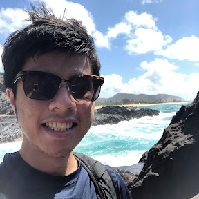

I am a undergraduate studying computer science at UC Berkeley. My main interests lie in software engineering, particularly back-end engineering. I will be taking coursework in Operating Systems , Stochastic Processes, and CS Ethics in the Fall 2023 semester. I am also actively looking for Fall 2023/Winter 2024 internship opportunities as well as new-grad opportunities, so feel free to contact me!
I have been competitively solving Rubik's Cubes for over 8 years and is without a doubt my biggest hobby. I have met all kinds of people through cubing and the community is one of the best groups of people I have ever been a part of. I am currently President of the Rubik's Cube Club at Berkeley. Our organization promotes speedcubing at UC Berkeley and in the Bay Area overall. We organize official Rubik's Cube competitions on campus year round and our members are often involved in staffing at competitions in the Bay Area.
In my free time and whenever I have the funds to do so, I like to build custom mechanical keyboards. The acoustics that you can get from a custom keyboard cannot be found in a mass-produced keyboard. There are many different types of keyboard switches, cases, plate materials, and other compenents that go into making a keyboard, resulting in endless combinations of boards that can be made. Even the keycaps themselves are an integral part of a good keyboard. Most people deep into the hobby will spend hundreds of dollars on making keyboards until they find their "endgame", the best possible board that they can have. I am currently using a Mode 65 with Gateron Black Ink V2 switches topped with GMK Red Samurai keycaps!